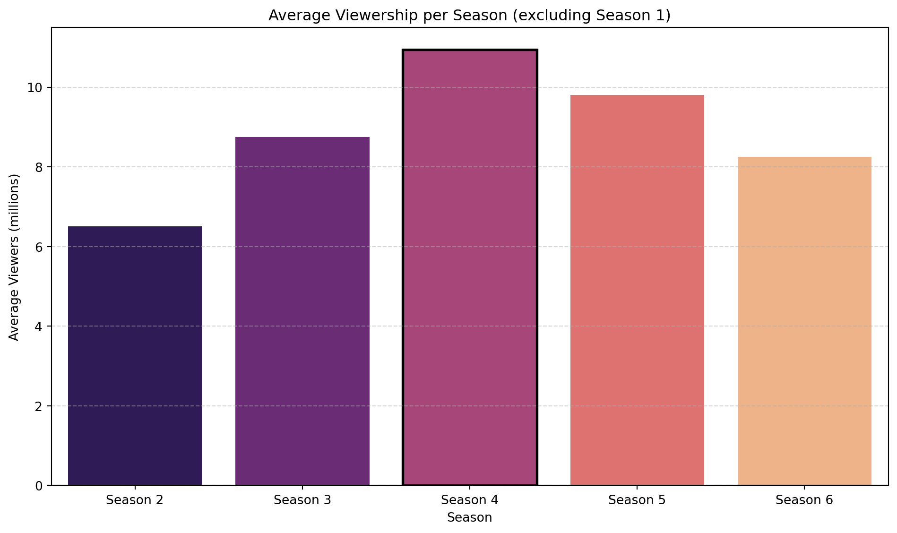

The Sopranos: Viewership Analysis
1 The Sopranos
1.1 Main
The Sopranos is an American crime drama television series created by David Chase. The series aired on HBO from January 10, 1999, to June 10, 2007, and consists of six seasons totaling 86 episodes.
The story centers around mob boss Tony Soprano (James Gandolfini), who juggles his role as the head of a criminal organization with his responsibilities as a husband and father. His emotional and psychological struggles are explored through therapy sessions with psychiatrist Dr. Jennifer Melfi (Lorraine Bracco).
Important characters include: - Carmela Soprano (Edie Falco), Tony’s conflicted wife - Christopher Moltisanti (Michael Imperioli), Tony’s impulsive cousin and protégé - Junior Soprano, Paulie Walnuts, Silvio Dante, and others in the crime family
1.2 Critical Reception
The Sopranos is widely regarded as one of the greatest TV series of all time. It has been praised for its writing, acting, character development, and innovative storytelling. The show broke ground by bringing cinematic quality and complex themes to television.
1.3 Awards and Recognition
- 21 Primetime Emmy Awards out of 112 nominations
- 5 Golden Globe Awards
- Frequently listed as one of the greatest television series by Rolling Stone, TV Guide, and Time
- The final episode, “Made in America,” sparked significant debate and became one of the most discussed finales in TV history
1.4 Legacy and Cultural Impact
The series is credited with ushering in the modern “Golden Age of Television,” influencing later prestige dramas like Breaking Bad, The Wire, and Mad Men. It also reshaped HBO’s identity as a provider of premium scripted content.
1.5 Views
1.6 Table representation
| Season | Average views |
|---|---|
| Season 2 | 6.51 million (lowest avg) |
| Season 3 | 8.75 million |
| Season 4 | 10.95 million (highest avg) |
| Season 5 | 9.8 million |
| Season 6 | 8.25 million |
1.7 Why Season 4 Stood Out
I think Season Four was the culmination of everything Chase wanted to do with the show. It was the perfect balance of family life and mafia life while feeling a lot more mature than the first 3 seasons. I think they really hit the “style” they wanted.